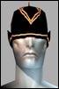

andthensome
Soleet
 Registered: Mar 2002
Posts: 39 | About the LLTS nerf, perhaps all is not lost... I'm not sure, and don't quote me on this, but there is a Jobe cluster of crit chance or something..... I think. Maybe not, but if true, maybe funcom won't lose another big proportion of their playerbase with this nerf.
Seems like there's less and less people playing nowadays and a nerf like this could be the final nail in AO's coffin. I really really hope they have more sense than that. And I really really really hope there's a jobe cluster for crit chance. Who knows? maybe they'll add other items that add to crit chance as well? Don't give up yet guys, let's give them a chance first.
 |
Shatai
Supa Leet
 Registered: Apr 2002
Posts: 210 | JobeClusters
Bureacracy - Adds to XP
Chemical Damage Increase - Adds to Chem damage
Chemical Reflection - Adds to ShieldChemicalAC (damage shield)
Cold Reflection - Adds to ShieldColdAC
Defencive Mastery - Adds to AddAllDef
Energy Damage Increase - Adds to Energy damage
Energy Reflection - Adds to ShieldEnergyDamage
Fire Damage Increase - Adds to Fire Damage
Fire Reflection - Adds to ShieldFireAC
Focus - Subtracts from "InterruptModifier"
Melee Damage Increase - Adds to melee damage
Melee Reflection - Adds to ShieldMeleeAC
Nano Mastery - Modifies NPCostModifier
NCU Backup - Adds to NCU
Offencive Mastery - Adds to AddAllOff
Poison Damage Increase - Adds to Poison damage
Poison Reflection - Adds to ShieldPoisonAC
Projectile Damage Increase - Adds to Projectile damage
Projectile Reflection - Adds to ShieldProjectileAC
Radiation Damage Increase - Adds to Radiation damage
Radiation Reflection - Adds to ShieldRadiationAC
Range Nano Controlling - Adds to Nano Range
Ranged Attack - Adds to Weapon Range
Regeneration - Adds to Heal Delta
Speedy Recovery - Reduces "SkillLockModifier"
And also, a NanoCluster of Nano Regeneration, I think it's called, adds to Nano Delta.
No crit buffs there. |
Mercatura
Supa Leet
 Registered: Apr 2002
Posts: 865 | The fun part if you have to look them up on a database, since they're so dang rare at any ql. Maybe non-existient, only one anyone ever showed me was one of the regen ones.
First I thought they were all getting ninja'ed off mobs, but they aren't popping up in forums or trade channels. |
toytd
Leet
 Registered: Oct 2002
Posts: 17 | OMG.. this is the only thing going for me now as a trader... I've been in AO forever and I think it should be left alone as a bonus to the players that have supported this game from the beginning ! |
iguanoid
Old Timer
 Registered: Mar 2002
Posts: 185 | only one i have seen i got from a chest in a ql 192 mission - its a Cluster of Nano Regeneration..... |
M@hdi
Eco Leet
 Registered: Dec 2001
Posts: 256 | quote:
Originally posted by Atda Office
only one i have seen i got from a chest in a ql 192 mission - its a Cluster of Nano Regeneration.....
Same, found a Q185 bright cluster of nanoregeneration. Nice "NoName" graphics... |
iguanoid
Old Timer
Registered: Mar 2002
Posts: 185 | BAH,
All is very much lost  |
Orchid
Supa LeetRegistered: Jun 2002
Posts: 1600 | not true, you're just not looking in the right place.
Ive found several Jobe clusters, healDelta and the nanoDelta
out at the new Primus camp. |


 Anarchy Online Bulletin Board > Future Anarchy > Next patch > About the LLTS nerf, perhaps all is not lost...
Anarchy Online Bulletin Board > Future Anarchy > Next patch > About the LLTS nerf, perhaps all is not lost... Last Thread Next Thread
Last Thread Next Thread 
 October 2nd, 2002 02:51
October 2nd, 2002 02:51